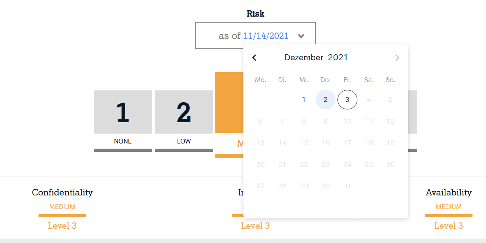

Troubleshooting Reports
Scanning results disappeared from reports
Option 1: Scan is disabled
If your scan is disabled, the scan results will be presented in your main report view for two weeks.
Access past reports using the datepicker.

Option 2: Target was removed from scope
If you removed the affected target (IP address, subdomain) from the scan's scope, issues related to this target disappear immediately.
Access past reports using the datepicker.